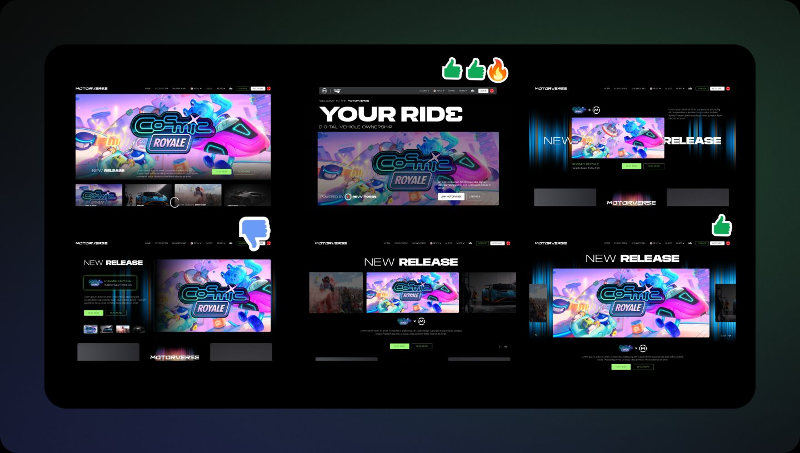
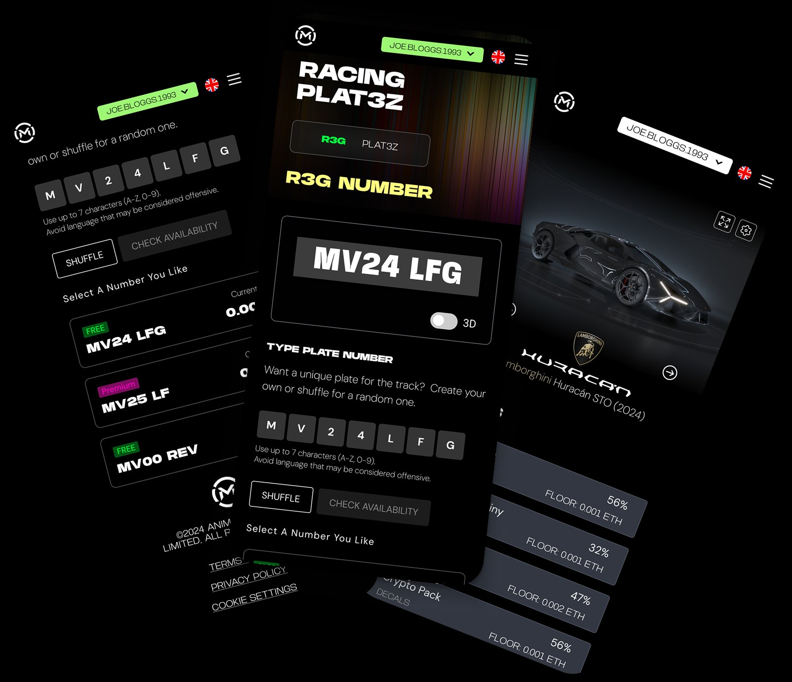
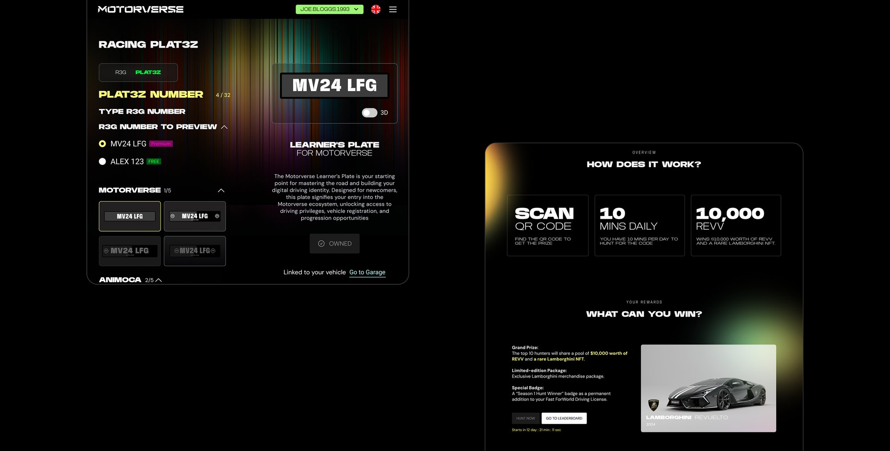
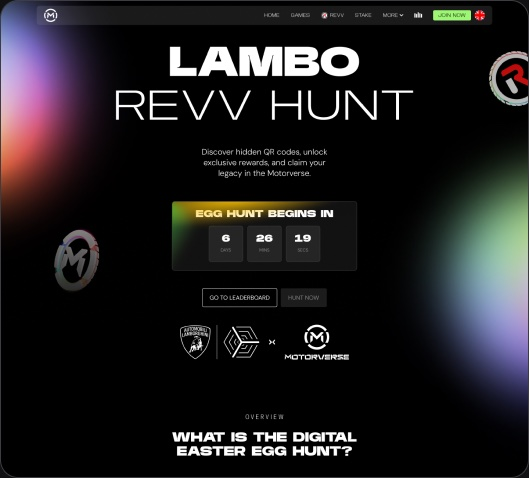
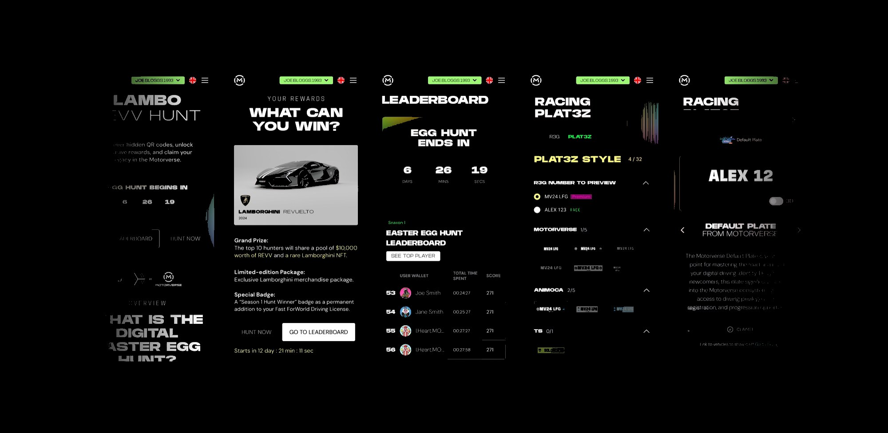

- UX/UI
- WEB 3
- Website
- Mobile
- 2024/25
The Motorverse
Redesigning a Web3 racing app for web and mobile
Motorverse is an ecosystem built around digital vehicle ownership and community, where players own a digital car and drive it across many games and experiences.
Overview
Our Design Team
- UX/UI Designer (me)
- Design Manager
Timeline
April 2024 – February 2025
My Core Deliverables
Research · Wireframes · Prototypes · UI design · Developer handoff documentation
The Project
The goal was to transform Motorverse's main website and app to align with its new motorsport and gaming brand identity, while building anticipation for the minting event of its first Lamborghini digital car, the Revuelto. The Showroom and Garage pages were designed specifically to carry that launch.
The result: over 1,000 cars minted in 26 minutes.
Started from UI style exploration
We started with a thorough review of the client's expectations and requirements, then audited the existing Motorverse platform and explored several UI directions for sign-off before committing to a full UI set.

Design
With a clear picture of what users and the business needed, I moved into redesigning the existing product. The aim was to align the platform with the new brand identity, improve how information was structured and surfaced, translate Web3 terminology so that non-crypto-native users could follow it, and deliver a responsive experience across desktop, tablet and mobile.

Multiple accent colours, applied as a system
Brand colours were used as the accent across all utility components, with primary buttons kept visually consistent between web and mobile so that the same action always looks the same, wherever it appears.
Gradients as a brand signature
Gradients were used throughout the pages to create a sense of energy and movement, giving Motorverse a distinct visual presence among other Web3 sites.

Designing momentum into the launch
Countdown timers, leaderboards and supporting UI elements were used to build urgency around the mint and drive engagement in the run-up to launch.

